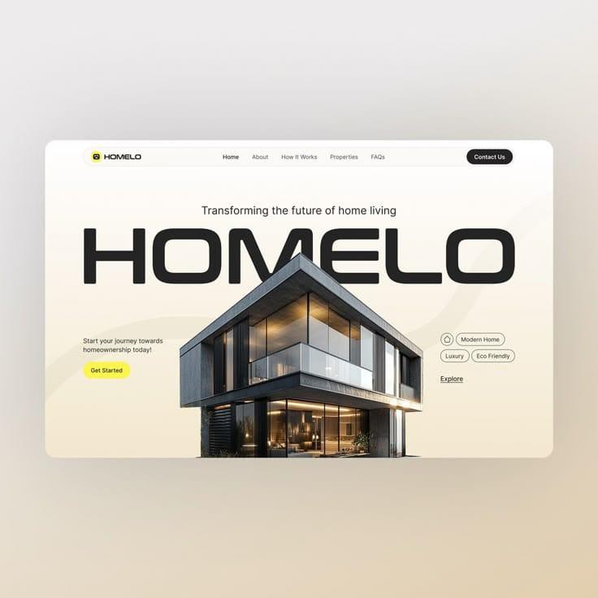

Hello, I'm
Kamanda Isaac
Kamanda Isaac
Mwanandjibu
I am a tech enthusiast pursuing a degree in Business Information Technology at UDSM, with the dream of becoming a leading developer and business owner.
Say Hello!
BITDegree
UDSMInstitution
DeveloperGoal

Short Biography
Focused on the intersection of business and technology. My journey started at Dar es Salaam International School and has led me to explore the world of software development.
Education History
2026 - 2028
Bachelor Degree
UDSM
2022 - 2025
College
Unique Academy
2018 - 2021
Secondary School
Mugabe Secondary
2011 - 2017
Primary School
D.I.S
